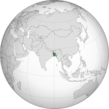

People's Republic of Bangladesh
গণপ্রজাতন্ত্রী বাংলাদেশ
(Bengali)
Gônoprojatontrī Bangladesh
Flag
Emblem
Anthem: "Amar Sonar Bangla"
(Bengali)
"My Golden Bengal"
March: "Notuner Gaan"
"The Song of Youth"
[1]
National Slogan: "Joy Bangla"
"Victory to Bengal"
[2][3]
Official Seal of the Government of
Bangladesh
Map of the world, with Bangladesh in 1971
highlighted
